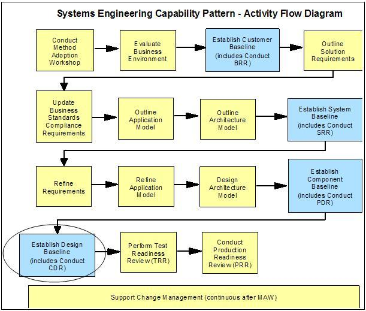
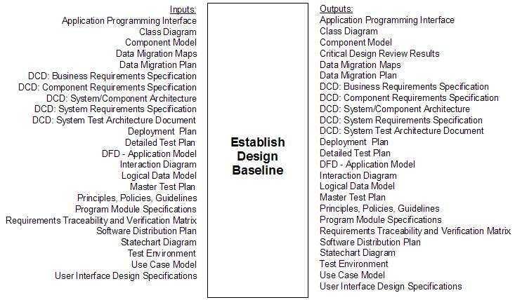

In an Enterprise SE&A project, the Design Baseline contains the component design for the system described in
the Component Baseline.
Figure 1 – Design Baseline in SE Capability Pattern

In the SE Capability Pattern, a number of work products are developed before it is time to review the Design
Baseline, as shown below.

The performance engineering team has a vested interest in ensuring that the performance and capacity aspects of the
component design are well-conceived and capable of meeting requirements. This will prove helpful to the later
SE&A baselines as the components are implemented, tested and deployed, which will in turn enhance the
likelihood that the overall project will satisfy the customer’s requirements. Deliverables which are deemed
deficient from a performance and capacity standpoint may lead to the entry of a defect, which is then taken into
account during the CDR Scorecard process.
At this time, the performance and capacity requirements should be thoroughly understood, and the PE team should
have made sufficient progress on volumetric, estimation and modeling work to have a strong grasp on the greatest
areas of performance risk. The PE team should use this knowledge to guide the efforts of the
development/implementation and test teams in their performance risk mitigation efforts (e.g. profiling, detailed
modeling, performance budgeting and measurement, performance testing). The PE team should also be establishing
contact with the appropriate operations and performance/capacity management personnel, if they have not already, to
discuss matters such as service levels, performance / capacity planning and management for the production
environment.
Organizing the PE Effort during the Design Baseline Phase
During this stage of the project, the PE team is typically concerned with activities such as the
following.
-
Continued execution of the PE plan – This involves both the direct activities of the performance
engineering team and the supporting activities of other teams (design, development, test, delivery /
operations, etc.)
-
Performance / capacity assessment of the component architecture – Since design information is now
available about the components which make up the system, this should make it possible to more accurately
assess the solution’s performance and capacity along with any associated risks and issues.
-
Additional preparation for production deployment – In addition to refining capacity sizing,
operational concerns such as live monitoring and capacity management will need to be considered.
Risk and Performance Management Focus during the Design Baseline Phase
It is possible that there will be continued attention to volumetrics, estimating, modeling and sizing efforts that
were started during earlier baseline phases. However, the overall focus will shift during the design baseline phase
from planning and predicting to designing and delivering. From a systems engineering perspective, the design
baseline and the accompanying Critical Design Review (CDR) will be the last opportunity to prevent defects before
test. For the PE team, participation in design reviews will become increasingly important, both to ensure that
“design for performance” practices are being followed and to gain the understanding of the emerging solution that
will be needed when the test phase starts.
Preparing for Production during the Design Baseline Phase
During the design baseline phase, additional information may allow us to refine (or do for the first time) some of
the production readiness tasks described earlier: sizing and planning for capacity, developing of Service Level
Requirements (SLRs), and updating the sizing information for the Physical Operational Model (POM).
Now may also be a time to begin thinking about live monitoring and capacity management procedures. For
example:
-
What tools will be used to measure performance and system resource utilization?
-
Will some kind of automated reporting be required?
-
Is some level of automation required to alert the operations teams when there is a performance problem?
-
Do the SLRs require some level of enabling of “on demand” features, such as orchestration and provisioning,
to respond to variations in workload or system resource availability?
Do the live monitoring and capacity management procedures proposed require any special attention during development
and test?
Estimating Design Baseline Performance
During the design baseline phase, additional information may allow us to refine (or do for the first time) some of
the estimation and modeling tasks described earlier. In addition to this refinement, it is also now possible to do
focused modeling and prototyping on areas of particular concern. For example, if the design team is considering two
ways of implementing a certain performance-critical feature, can both alternatives be modeled or prototyped for the
purposes of comparison? While the PE team continues to have responsibility for assessing the overall performance of
the solution, focused estimating / modeling efforts can add value as well.
Interacting with the Development Team during the Design Baseline Phase
During the component design phase, PE efforts will continue to move to a lower level, sometimes referred to as
unit performance design. Detailed design techniques, database schema, SQL joins, Java garbage collection and
so on are just a few examples of areas where the development team will be having to manage the trade-offs between
ease of development, maintainability, performance, recoverability and so on.
While the PE team is clearly not in a position to mandate every decision that every developer makes at this stage,
the PE team should nevertheless make it clear that performance requirements, like functional requirements, must be
adhered to by the final solution. If tracking application performance through the design, development and
test can be made an accepted part of the process, then the PE and development teams can treat performance as a
shared goal rather than an arbitrary edict.
Interacting with the Test Team during the Design Baseline Phase
If it has not been done already, the PE team should be involved in the review of the performance test strategy and
plan. It may be appropriate for the PE team to assist in planning for specific performance test scenarios to
ensure coverage of the performance requirements, service level requirements, live monitoring requirements and major
performance risk areas. The RTVM may be revisited to ensure that the requirements validation methods for
performance (e.g. modeling versus testing) are still appropriate.
Participating in the Critical Design Review (CDR)
The following excerpt from the Preliminary Review scorecard denotes the PDR criteria which apply to performance
matters.
|
2. Component Design and Test
2.2 Completeness with the test plans and traceability to acceptance criteria and end-to-end
functionality agreed to by the testing team
3. Service Delivery Center (SDC) / Managed Operations and Delivery
Organization
3.1 Agreement with regard to production infrastructure, its capacity and projections
3.2 Agreement with regard to availability and disaster recovery approach and projections
4. System Testing
4.1 Test plans traceable to system/component requirements and acceptance criteria
|
Below are some examples of questions that the PE team can be asking above and beyond the standard CDR scorecard
criteria.
-
Are both system and component technical volumetrics being maintained?
-
Have business volumetrics changed? Will they change our technical volumetrics, sizing, ability to meet SLRs
or other performance-critical assumptions?
-
Has the technology research been completed and incorporated into the estimation/modeling activities?
-
What results are available for the system and component performance estimation and modeling activities done
to date?
-
Has the capacity plan been updated to take into account the system and component estimation/modeling done
so far?
-
Do the component designs reflect adequate attention to performance considerations?
-
Do the component developers have the tools and techniques they need to address module performance during
code and unit test?
-
How does the development team plan to track progress against their performance goals?
-
Has a performance test plan been defined?
-
Will the performance test environment be ready and available by the time performance testing is scheduled
to start?
-
Has the performance risk been reassessed since the PDR?